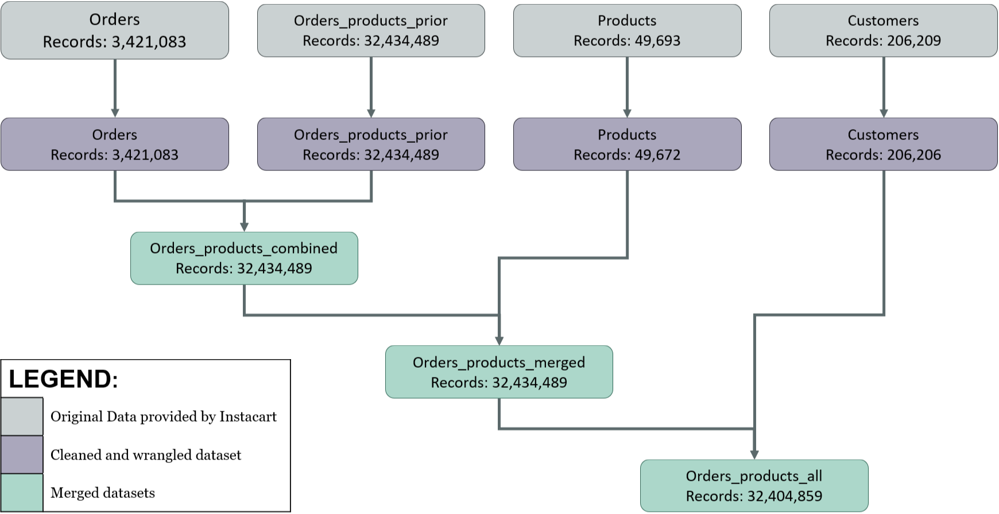

Instacart:
Ecommerce App
Overview
Motivation
Instacart is an online grocery store that operates through an app. Instacart already has very good sales, but they want to uncover more information about their sales patterns. Their marketing and finance teams want an exploratory analysis of some of their data in order to derive insights and suggest strategies for better segmentation.
Objective
The Instacart marketing and Finance teams have provided some key questions that they want answered, and recommendations made based on the derived insights:- What are the busiest days of the week and hours of the day?
- Are there particular times of the day when people spend more money?
- What is the distribution among users in regards to their brand loyalty?
- Are there certain types of products that are more popular than others?
TOOLS


Python, NumPy, Pandas


Seaborn, MatPlotLib, Anaconda, Jupyter
SKILLS
- Data cleaning and consistency
- Data wrangling and subsetting
- Variable derivation
- Data visualisation with Python
Process
Consistency Checks
| Dataset | Missing Values | Missing Values Treatment | Duplicates |
|---|---|---|---|
| Orders | 16 NULL values found in product_name column | Records removed | 5 duplicate rows removed |
| Products | 206,209 NULL values in days_since_prior_order column |
Keep NULL values. Create new column to flag user's first order |
|
| Orders_products_prior | No missing values | No duplicates | No duplicates |
| Customers | No missing values | No duplicates | |
| States | No missing values | No duplicates | |
| Departments | No missing values | No duplicates |
Deriving Columns
Price Ranges
The pricing data constained continuous daat over a large range. These were catagorised into three groups:
- High-Range: Greater then $15
- Mid-Range: Greater that $5 and less than $15
- Low-Range: Less than or equal to $5
Region
In order to get a clear picture of Instacart's national sales by region the customers' State information
was used to place them into one of four Census Bureau regions.
The code creates an array, Regions, containing a vector for each of the four regions required.
A for loop is used to cycle through the regions and apply the correct derived variable based on the value of the customer_state
variable.
Dataflow
The data provided by Instacart was imported to Pandas and dataframes merged on common variables. The population flow shows how the merging was ordered, and the number of records in the susequent dataframes created. Visualisations and Recommendations:
The following are abridged notes on the insights and recommendations made. The full recommendations are available at the foot of the page.
Average Total orders by Weekday
 Insight: Sales peak on Saturday and are at their lowest on Wednesday.
The sales follow a consistent trend where the Saturday (0) peak slowly falls until Wednesday (3), where it begins to rise again.
Weekend sale have a significantly larger volume of sales than the weekday sales.
Insight: Sales peak on Saturday and are at their lowest on Wednesday.
The sales follow a consistent trend where the Saturday (0) peak slowly falls until Wednesday (3), where it begins to rise again.
Weekend sale have a significantly larger volume of sales than the weekday sales.Recommendation: Prioritise directed advertising on weekends by emailing customers on Friday afternoon/evenings and on Satudays with promotional materials.
Average Purchase Price by Hour of the Day
 Insight: The hourly expedature graph shows that the average price of sales in highest between 02:00 and 04:00, peaking at $18. Sales are a consistent £12 at other times
Insight: The hourly expedature graph shows that the average price of sales in highest between 02:00 and 04:00, peaking at $18. Sales are a consistent £12 at other timesRecommendation: On the sales portals give precidence to high value items from 02:00 to 04:00. Ensure that these items are the main focus of the homepage when customers log in.
Frequency of Purchasing by Customer Loyalty
 Insight: When comparing the reguarity of spending by New Customers and the Regular (established) Customers the difference is that New Customers are mainly Non-Frequent customers (50%).
Insight: When comparing the reguarity of spending by New Customers and the Regular (established) Customers the difference is that New Customers are mainly Non-Frequent customers (50%).Recommendation: Encourage the New Customers (totaling over 6 million) to become Regular Customers by giving insentive to order more frequently.
To make regular purchasing easier try introducing schemes such as: